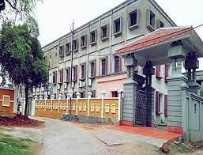

Institute of Management and Information Technology,Cuttack
home
IMIT
The Institute of Management and Information Technology(IMIT),
formerly known as College of Accountancy and Management Studies (CAMS),
Cuttack was founded way back in 1962. It is a unique prestigious institution
of the Government of Odisha, and has positioned itself as a premier institute
offering various professional and technical courses that groom the students
to cater to the expectations of modern industry.
The college offers Post Graduate and Research programmes in computer
science and Business Administration. The College campus is located at Jobra,
Cuttack, on the bank of the river Mahanadi. Being twin to the state capital,
Bhubaneswar, the Cyber heart of Odisha, it enjoys many advantages.Its close
proximity to many large scale industries, central and state public sector
undertaking and technical institutions has provided opportunities to its students
for project work, practical training and research. While strengthening human
resource development efforts in the country, this college lays greater emphasis
on qualitative sense of education and not merely quantitative one.

Vision of IMIT :
To be an Institute of national repute and center of excellence in imparting
professional education and research through innovative, rigorous and
Compassionate Education.
Mission of IMIT :
To inspire the students and create a climate of learning.
To empower the students with Knowledge and Professional skill to face the challenges of changing environment.
To maintain the high standards of professional education with a value orientation.
To provide a broad range of career-oriented programs to meet the needs of society in general and professional education in particular.
.jpeg)